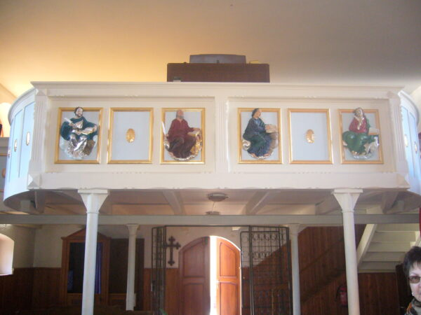
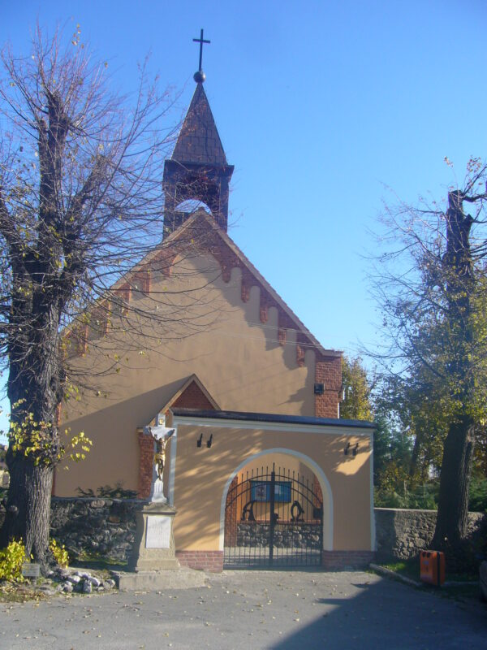
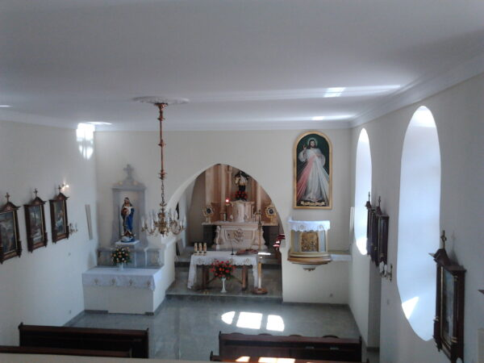

⛪ Kościół św. Jana Nepomucena w Piskorzowie
W centrum miejscowości Piskorzów znajduje się zabytkowy kościół pw. św. Jana Nepomucena. Świątynia ta należy do lokalnej parafii i stanowi ważny element dziedzictwa historyczno-kulturowego regionu.
Kościół powstał pierwotnie w XVI wieku jako budowla wzniesiona przez protestantów – ewangelików, którzy wówczas stanowili większość mieszkańców Piskorzowa. Mimo że tzw. „redukcja” świątyń miała obejmować tylko te wzniesione przez katolików, w 1654 roku kościół ten również został odebrany ewangelikom.

W roku 1730 kościół został przebudowany przez katolików, a w 1921 r. rozbudowany. Aż do roku 1967 pełnił funkcję kościoła filialnego parafii św. Jakuba w Pieszycach. Obecnie stanowi samodzielną świątynię parafialną, a do wspólnoty należy ok. 1360 wiernych.

🧱 Architektura i wygląd
Kościół św. Jana Nepomucena to bezstylowa budowla o prostokątnym założeniu. Posiada nieco węższe i niższe prezbiterium, do którego od północy dostawiono zakrystię. Zarówno nawę, jak i prezbiterium pokrywają ceramiczne dachy dwuspadowe, a zakrystię – połać dachu prezbiterium.
Ściana szczytowa zdobiona jest ceglanym gzymsem z fryzem arkadkowym i zwieńczona współczesną, murowaną sygnaturką z trzema arkadami. Wnętrze oświetlają półkoliście zamknięte okna ujęte w ceglane opaski.

🪑 Wyposażenie wnętrza
Wnętrze kościoła charakteryzuje się prostotą i spokojem, a jego wyposażenie pochodzi z okresu od XVIII do XX wieku. Znajdziemy tam elementy barokowe oraz neogotyckie, a także współczesne dodatki liturgiczne.
